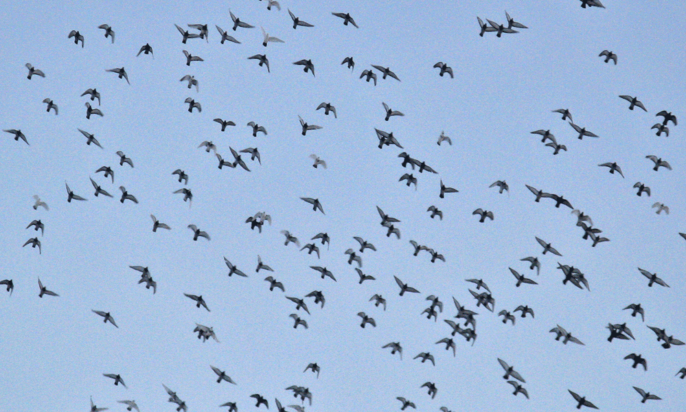
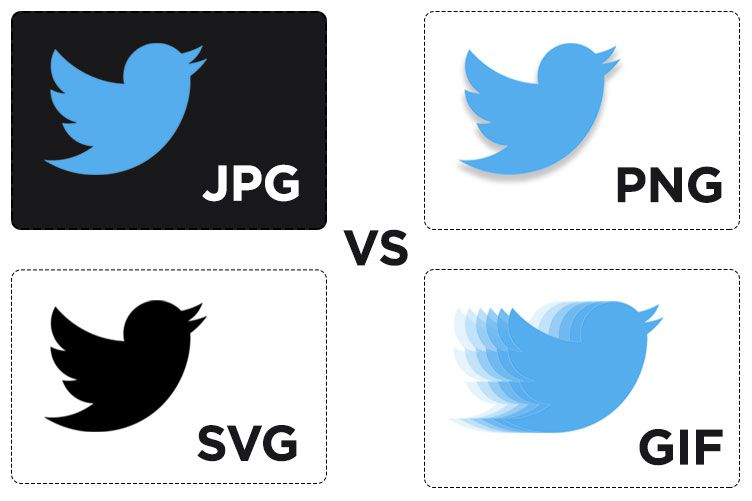
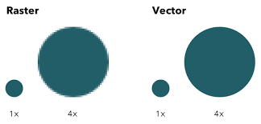

GIFGIF is een bestandsformaat voor het opslaan van rasterafbeeldingen in digitale vorm. GIF is de afkorting van graphics interchange format, een grafische bestandsindeling met pixels. GIF ondersteunt kleuren, verschillende resoluties, animatie en een transparante achtergrond. Het aantal kleuren in een GIF-bestand is meestal beperkt tot 256 (door het gebruik van 8 bits), die elk wel uit 262.144 verschillende gekozen kunnen worden. Er zijn echter uitbreidingen die het gebruik van al die kleuren mogelijk maken. |
 |
CompressieCompressie vindt plaats op basis van de verdeling en het aantal kleuren in horizontale richting. Indien het een afbeelding is met weinig kleuren en met herhalende patronen dan is goede compressie mogelijk en de bestandsgrootte erg klein. Zijn er veel kleuren of is er dithering toegepast dan loopt de bestandsgrootte op en zijn bestandsformaten als JPEG of PNG met 24 bits per pixel veelal een betere optie. |
 |
SVGScalable Vector Graphics, afkorting: SVG, is een op XML gebaseerd bestandsformaat voor statische en dynamische vectorafbeeldingen. Het is een open standaard van het W3C. |
 |
PNGPortable network graphics, meestal afgekort als PNG (uit te spreken als ping,[1] vaak als initiaalwoord uitgesproken) is een bestandsformaat voor rasterafbeeldingen met verliesloze compressie. PNG's not GIF wordt soms als recursief backroniem gebruikt voor PNG. |

|
JP(E)GMet de afkorting JPEG (spreekt uit als: jee-peg) wordt een bestandsindeling aangeduid voor het opslaan van rasterafbeeldingen in digitale vorm. Het is een vorm van datacompressie en van broncodering. De naam staat voor joint photographic experts group. |

|